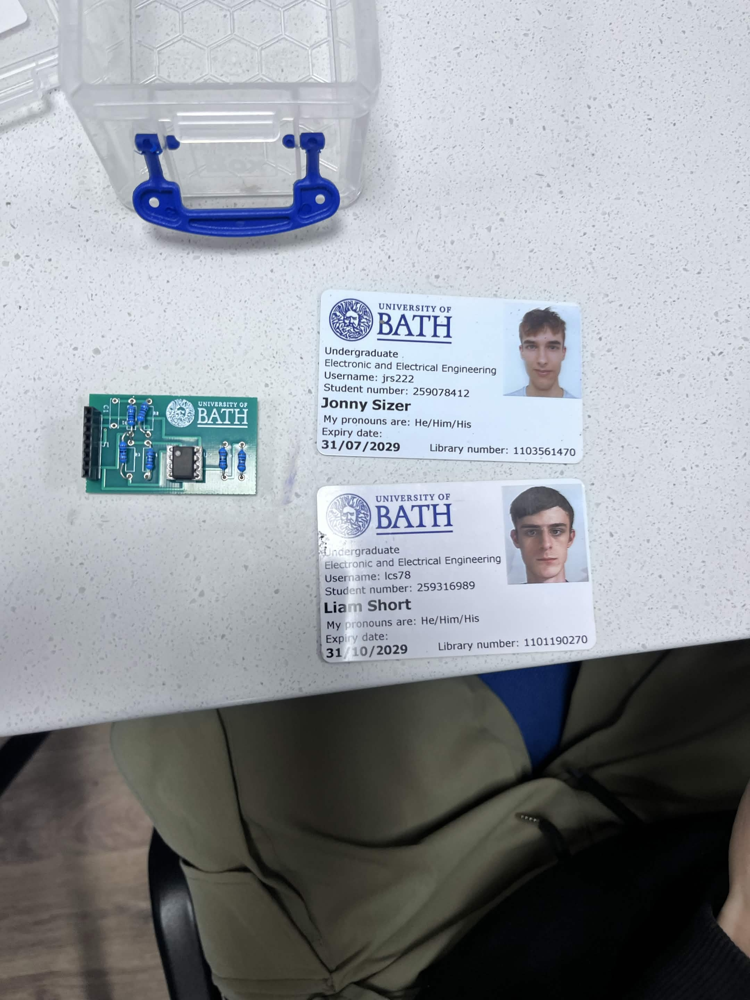
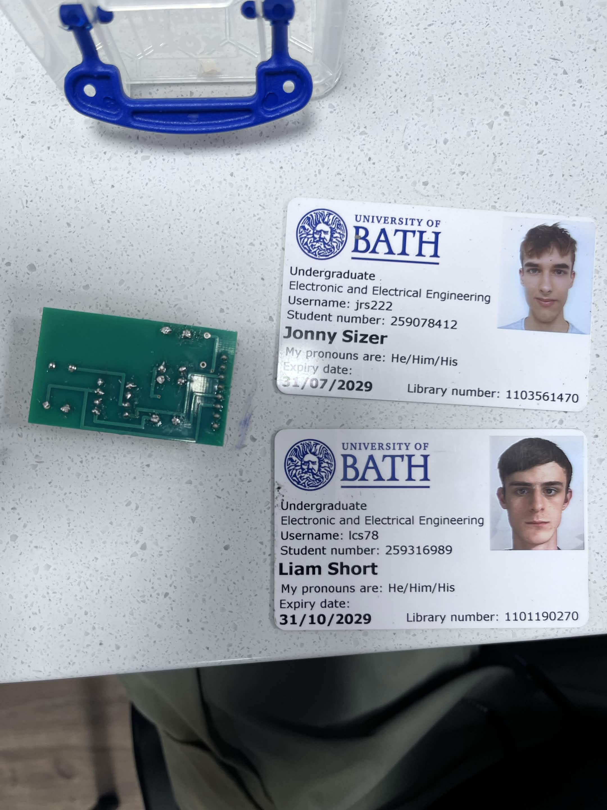
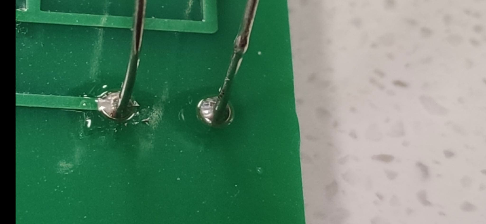
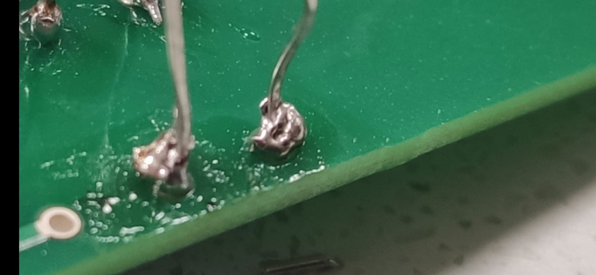

PCB Assembly
Introduction
This page showcases soldering a PCB, and reflects on solder joints of varying quality
PCB Top View

PCB Bottom VIew

Perfect Example

Mediocre Example

Bad Example

Poor Joint
This joint shows insufficient wetting and possibly overheating, with the solder spread unevenly and not forming a fillet. Furthermore, the two joints have shorted together which makes this joint failed and need to be de-soldered.
Perfect Reflection
This joint is smooth, shiny, and forms a concave fillet onto the pad. This indicates good wetting and temperature. It demonstrates improved control of solder amount and heat application.
Inconsistent joints
These joints both have excess solder that form blobs of solder which is not ideal. Whilst electrical connection is likely, the shape should be conical and not a blob. Less solder should be used and application of heat more consistently to both the pad and wire.
GenAI Acknowledgement Statement
GenAI was not used in the preparation of this assignment.
Skills Mapping
Skills Claimed
- Circuit design & realisation — claimed at I am claiming this skill at ApplicationPlace feedbackCloseFeedback - Annotation: Circuit design & realisationClosePlace feedback